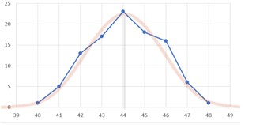
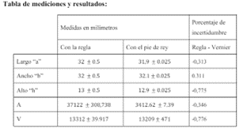
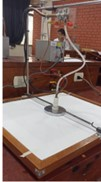
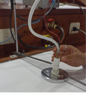
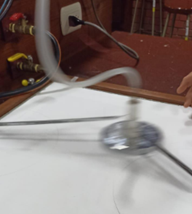
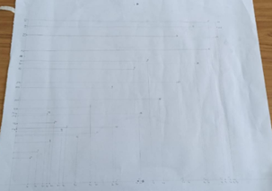
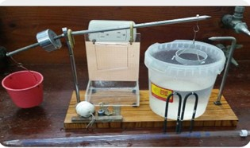
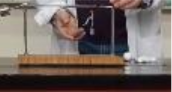

Laboratorio 1: Medición y Error Porcentual
En este laboratorio vas a conocer las definiciones relativas
al error experimental y vas a tener que determinar
el error en el proceso de medición. De todos los
laboratorios que vas a tener en el curso este es
el más tedioso de realizar, ya que el tiempo nos
juega en contra así que se recomienda que el grupo
se divida los experimentos y si tienen las facilidades
de llevar una laptop lo hagan, ya que se pueden ayudar
de un Excel para agilizar los cálculos.
Enlace de la guía de Labo 1:


Laboratorio 2: Segunda Ley de Newton
En el presente laboratorio se analizan y presentan todos los cálculos y conclusiones
realizadas en el experimento de vector velocidad y velocidad instantánea,
así mismo se detalla el procedimiento seguido, se llega a calcular la
gráfica de la velocidad vs tick y se compara sus valores con los teóricos.
Enlace de la guía de Labo 2:




Laboratorio 3: Péndulo y Teorema de Steiner
En este experimento sobre el péndulo, en el cual tenemos que tomar en cuenta
diferentes medidas para hacer comparaciones sobre los periodos de oscilaciones,
para ello tomaremos de la mano conceptos básicos como el momento de inercia, teoría
de péndulo simple, con la finalidad de hallar una relación entre la distancia hacia
el punto 0, con el periodo de oscilación.
Debemos analizar en dos situaciones, en las mayores longitudes, tomaremos en cuenta diez oscilaciones mientras que, en las menores longitudes, tomaremos con cinco oscilaciones para mantener un mayor aproximado en el trabajo.
Debemos analizar en dos situaciones, en las mayores longitudes, tomaremos en cuenta diez oscilaciones mientras que, en las menores longitudes, tomaremos con cinco oscilaciones para mantener un mayor aproximado en el trabajo.
Enlace de la guía de Labo 3:
Laboratorio 4: Densidad y Tensión Superficial
En esta ocasión vamos a determinar la densidad de un sólido mediante el uso del Principio
de Arquímedes. En el laboratorio, se sumergió completamente el sólido en agua, y se
midió el empuje resultante, equivalente al peso del agua desplazada. Este empuje permitió
calcular la densidad del sólido, comparando finalmente los datos experimentales con los teóricos.
Enlace de la guía de Labo 4:


Laboratorio 5: Calor Específico de Sólidos
Este laboratorio a comparación con los otros es el más sencillo de realizar
aunque no hay que confiarse ya que los diferentes
procesos a realizarse demoran, por ejemplo, esperar
a que hierva agua…etc. En este laboratorio te van a
pedir que halles dos cosas fundamentalmente: el calor
específico de metales (plomo, aluminio y hierro,
generalmente) y el equivalente en agua de tu
calorímetro(termo).
Enlace de la guía de Labo 5: